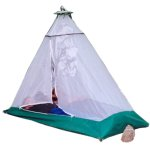
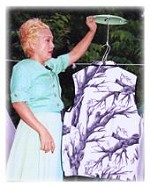
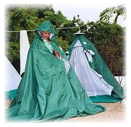

Camper à la campagne est un excellent moyen de profiter de la nature et puisqu'une tente est indispensable pour vivre dehors, Maître a créé un abri individuel multifonctions intelligemment conçu. Cette tente est si confortable et légère que les pratiquants ont demandé sincèrement qu'elle soit fabriquée pour le grand public. Maître est fière de cette conception superbe qui a les caractéristiques suivantes.
La tente peut être montée en quelques secondes avec une corde attachée à une branche d'arbre ou tout autre type de structure horizontale. En un rien de temps, on obtient un abri contre la pluie et le vent et un lieu pour se reposer. Une grande corde peut être utilisée pour suspendre plusieurs tentes permettant ainsi une utilisation rationnelle de l'espace.
Cette tente spacieuse peut loger jusqu'à deux personnes.
Dans la tente se trouvent plusieurs poches légères et pratiques en tissu transparent qui permettent de voir clairement leurs contenus offrant un rangement pratique et rapide.
Tente de méditation : retirez le double toit de la tente et vous obtiendrez un abri confortable pour méditer en plein air. La base de la tente est résistante à l'eau et la toile intérieure est finement tissée pour la ventilation et la protection contre les insectes. Elle peut aussi servir de moustiquaire.
L'ensemble est fin et léger rendant le montage aisé et rapide. Une fois démontée, la tente peut être pliée et rangée dans un petit sac à dos. Elle est légère et facile à transporter, permettant ainsi d'emmener des livres et autres provisions.
Une fois correctement plié, le double toit de la tente peut servir de coussin.
Sa forme en dôme la rend solide et résistante à la déformation causée par le vent. Robes de soirée, costumes et autres pièces peuvent être suspendues sur des portemanteaux accrochés à l'intérieure de la tente pour ne pas les froisser. Les vêtements peuvent aussi être suspendus à l'extérieur pour sécher sur des cintres fixés au sommet du dôme.
Le double toit de la tente est assez grand pour abriter à la fois les bagages et le coussin. Il possède deux fenêtres fendues pour faciliter l'aération. Cette cloison peut-être utilisée comme un grand poncho, permettant de méditer en paix dans la forêt, même pendant une grosse averse.
Les fenêtres peuvent aussi jouer le rôle de manches pour y glisser les bras, les mains sortant ainsi à l'extérieur en toute liberté comme si l'on portait un coupe vent.
La longueur peut être réglée à notre taille avec un cordon et si l'on est surpris par une averse en attendant les transports, on peut simplement l'enfiler pour se protéger seul ou à plusieurs.
Le double toit de cette tente multifonctions est fait d'un tissu spécial doublé d'une couche métal argenté résistante à la chaleur, à l'eau, au feu et qui protège aussi des UV.
Les bagages et les coussins sont rangés dans la tente. Les chaussures peuvent rester à l'extérieur sans être trempées par la pluie, protégées par le double toit.